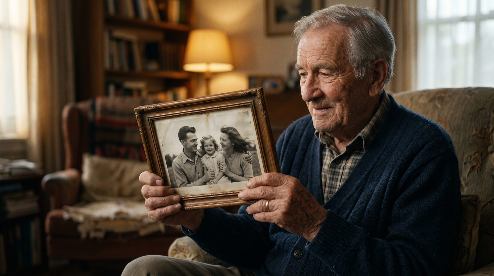

У многих из нас осталась всего одна-две фотографии дедушки — пожелтевший снимок, где он молодой, серьёзный, ещё до всех нас. Сегодня этот снимок можно оживить: превратить в короткое видео, где он моргает, чуть улыбается и смотрит прямо на вас. Разбираем, как это сделать самому за 60 секунд и какое фото подойдёт лучше всего.
Чаще всего за этим стоит одно простое желание — ещё раз увидеть его живым. Не на статичном снимке, а в движении: как он поднимает взгляд, как трогается уголок губ в улыбке. Для многих семей это сильный эмоциональный момент — особенно если дедушки уже нет рядом.
Типичные сценарии:
Самый быстрый способ в 2026 году — нейросеть Kling 2.5 через российский сервис VideoAI. Не нужно ничего устанавливать, всё на русском, первое видео бесплатно.
Отсканируйте или сфотографируйте снимок. Если фото бумажное — сфотографируйте его при дневном свете, без бликов, чтобы лицо было чётким.
Откройте botisk.ru и загрузите фотографию. Регистрация не нужна — просто перетащите файл.
При желании добавьте подсказку движения — например, «gently smile» (улыбнуться) или «look at camera». Это необязательно, но помогает.
Подождите ~60 секунд. Нейросеть создаст 5-секундное видео, где дедушка оживает: появляется лёгкое движение головы, моргание, улыбка.
Посмотрите результат прямо в браузере. Первое видео — бесплатно. Понравилось — скачайте в HD.
От исходника зависит почти всё. Лучший результат дают снимки, где:
Если фото старое и поцарапанное — это поправимо: современные AI-реставраторы убирают царапины и повышают резкость за минуту.
| Способ | Время | Цена | Результат |
|---|---|---|---|
| Фрилансер / видеостудия | 2–5 дней | от 5 000₽ за фото | Качественно, но дорого и долго |
| MyHeritage Deep Nostalgia | 1–3 мин | ~3 990₽/год | Только лицо, нужна подписка |
| Зарубежные сервисы | 2–10 мин | $9.99/мес (карты не из РФ) | Проблемы с оплатой |
| VideoAI / Kling 2.5 | 60 секунд | Первое видео бесплатно | Полное видео, оплата картой РФ |
Это первый вопрос, который возникает у многих. Однозначного ответа нет — каждая семья решает сама. Но опыт тысяч пользователей показывает: для большинства это тёплый способ почтить память, а не что-то тревожное. Видеть, как близкий человек снова улыбается, — для многих это про любовь и благодарность, а не про утрату.
Если сомневаетесь — начните с малого: оживите одно фото и посмотрите на свою реакцию. Эту же тему мы подробно разбираем в статье как оживить фото бабушки.
Без регистрации. Первое видео — бесплатно. Загрузите снимок — получите живое видео за 60 секунд.
Создать видео из фото →Да. Нужен только сам файл фотографии — технология работает с любым снимком. Многие используют это именно как способ сохранить память.
Нет, если движение мягкое. Kling 2.5 делает естественную лёгкую анимацию — моргание, полуулыбку. Резких неестественных движений нет.
Нет. Первое видео бесплатно, без ввода карты. Платите только если захотите делать ещё — от 290₽ за 10 видео.
Понравилась статья? Поделитесь с теми, кто хранит старые семейные фотографии.